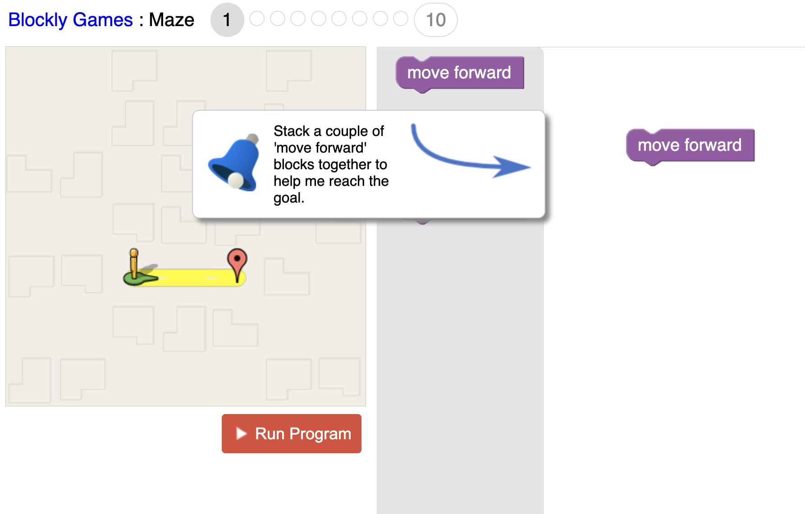

Bienvenue dans l'espace Informatique !
Ici, tu vas pouvoir découvrir des outils numériques, apprendre à programmer, faire des recherches sur Internet en toute sécurité et relever des défis amusants. Clique sur les images pour explorer les différentes activités !

Avec Pronote, tu peux retrouver tes devoirs, consulter les résultats de tes évaluations et voir tes bulletins scolaires. C'est l'outil qui t'accompagne tout au long de l'année !
J'y vais !
Tu as besoin de faire une recherche pour la classe ? Utilise Qwant Junior ! Ce moteur de recherche est spécialement conçu pour les enfants. Il t'aide à trouver des informations tout en évitant les contenus qui ne sont pas adaptés à ton âge.
J'y vais !
Aimes-tu les défis ? Le Concours Castor Informatique te propose des énigmes et des jeux de logique pour découvrir le monde de l'informatique en t'amusant. Pas besoin de savoir programmer : il suffit d'observer, de réfléchir et d'essayer !
J'y vais !
Envie de devenir un apprenti programmeur ? Avec Blockly Games, tu apprends les bases du codage en jouant. Assemble des blocs, résous des défis et découvre comment fonctionnent les programmes informatiques !
J'y vais !Aujourd'hui, les intelligences artificielles sont capables de créer des images étonnantes. Mais sais-tu les reconnaître ? Essaie ce jeu pour tester ton œil de détective et développer ton esprit critique !
J'y vais !